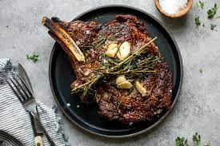

Cast Iron Steak

Description
Nicely seared steak with hints of whatever herbs you would like to utilise to base with.
Ingredients
- Steak
- Thyme
- Garlic
- Butter
Steps
- Salt and Pepper Steak
- Allow steak temperature to reach room temperature
- Heat up your cast iron pan blazing hot
- Fry your steak to desired levels
- Flip your steak 75% in
- THrow in your thyme and garlic with butter
- Use a spoon to scoop and base steak with godlike butter sauce
- Remove from pan and let rest for at least 5 minutes
- Enjoy its greatness